|
Sea-Monkey |
UI Specification
|
|
Ender send feedback to the component specific newsgroup |
Last Modification:
|
|
Author: Jennifer Glick |
Status: |
|
|
Feature Team |
Older spec, will be updated |
Open Issues
- Which features are staying and which are going away?
- How will features be exposed to users? Modal dialogs like 4.5? Floating palettes? Horizontal tabbed properties along the bottom of the window (as proposed by C.Manske)?
- Since a Java Virtual Machine will not be included in Seamonkey, do we want to include the features that rely on Java?
- What will be included on the Toolbar?
- Will Style Sheets be included?
- Will "Blink" feature be included? Up to PM.
- Drop down combo boxes, currently separators are NOT available.
- Font Sizes: Use web conventional font sizes (+4, +3, +2, +1, normal, -1, -2)? Do we want to do this or do we want to stick to what we currently have (8, 10, 12, 14, 18, 24, 36)? If we use the web conventions, what do we call the "normal" font? Do we want to use terms such as:, smallest, smaller, small, normal, big, bigger, biggest? In this case "normal" is really +1. Or, we could have buttons that "Increase" or "Decrease" font size. Does Style Sheets solve this problem?
- Will there be preferences for Ender even if there is no separate Composer component? (Default text color, link colors, background color, etc.)
- You are in a browser, within an Ender widget. You click "Ctrl + B" or "Apple + B", does this cause Bookmarks to open or Bold to be activated? Current thought is that Bold should be activated.
- Since Seamonkey will be cross platform, what fonts will be available from the Toolbar and the menus? The same, or different depending on what platform you are running?
Summary
The Ender widget is an embeddable HTML editing module which enables users to create rich text (HTML) formatting styles within a Mail Compose Window or within a Navigator text area element (embeddable component within a web page).
Goals
While in Navigator, Ender offers a method by which users can format their content within a text area provided by a content provider. Ender is a Composer-like feature that gives users control over their formatting rather than submitting or sending fixed-width text.
While in Messenger, Ender provides a method by which user can create rich text (HTML) formatting styles within their new, reply or forward mail messages.
Navigator 3.x to Seamonkey will be able to view this text area. In previous versions, where Navigator doesn't permit WYSIWYG formatting, users will be able to type assuming the prior behavior of fixed-width text. In version Seamonkey and beyond, this area will provide the formatting toolbar with Composer-like formatting capabilities.
Target User
The target user for Communicator Seamonkey is Internet consumers, the small office/home office user, or people accessing the internet from home or work for pleasure. See the Communicator PRD for more details. With regards to Ender specific features, these users generally use the internet for submitting forms or sending information back to a site or person and for creating email messages.
Novice users should be able to use Ender to easily add simple formatting, while more advanced users should be able to use Ender to complete more advanced formatting.
Content Providers
The Ender widget provides content providers with the ability to allow uses to format text, within forms and certain text field areas, and to format email messages without leaving the content provider's site. The layout and location of the Ender toolbar within a web page or site will be determined by the appropriate content provider.
User Tasks
Fundamental Tasks
Intermediate Tasks
Advanced Tasks
Users should be able to use the basic formatting tools such as:
- Selecting a Paragraph Style
- Selecting a Font Type
- Selecting a Font Size
- Setting a Text Color
- Bold
- Underline
- Italic
- Bullet list
- Numbered list
- Indent
- Unindent
- Justification
- Spellcheck
- Insert a graphic
- Insert a table
- Edit a table
- Modify document properties
- Edit the HTML source code.
Design Cheatsheet
The Ender widget (Formatting Toolbar) is an embeddable HTML editing module which enables users to create rich text (HTML) formatting styles. The Formatting Toolbar is an important component both within the Mail Compose Window or within a Navigator text area element (embeddable component within a web page).
This spec discusses more global Ender issues. For Mail Compose specific issues, please see the Mail Compose UE Main Spec and Mail Compose Menus UE spec.
Native dialogs
- File open
Ender Formatting Toolbar Displayed in the Browser
The Ender Formatting Toolbar displayed in the browser will also contain a spell check button (for Mail Compose, the spell check button is located on the Main Mail Toolbar).
The location of the Ender Formatting Toolbar as displayed in the browser will depend on the content provider. The content provider decides how the toolbar will be displayed in their web pages. Some options might include:
- Directly above the Ender text widget (See Figure A and B). This is recommended if there are relatively few Ender widgets on a particular web page. The Toolbar is grouped directly with the text editing field with which it corresponds.
- Below the browser toolbars (See Figure C). This is recommended if there are quite a few Ender widgets on a particular web page. If there are many Ender widgets on a web page, it will be cluttered and potentially confusing if each text field has a toolbar. A concern though is that users will not understand the direct connection between the Ender Formatting Toolbar and the Ender text widget if the two are separated visually.
- A floating palette outside/over the browser (See Figure D). There is the concern that novice users may not understand the concept of a floating palette.
When the content designer creates a Ender form element that is not as wide as the width of the composer-like tool bar selections, the toolbar will wrap (see Figure B). The tools should wrap as groupings.
Although it is up to the content provider how the Ender Toolbar will be displayed, the Ender team needs to decide which options will be implemented and in what order.
Figure A - Toolbar Directly above the Ender Text Widget
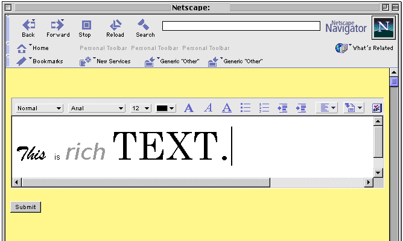
Figure B - Toolbar Directly above the Ender Text Widget,
Wrapping of Toolbar
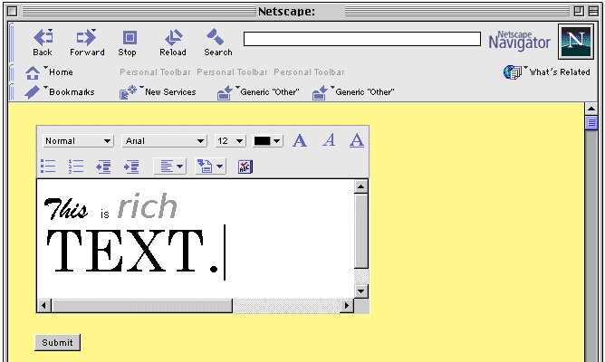
Figure C - Below the Browser Toolbars
Note: The Ender Toolbar stays visible when the web content is
scrolled
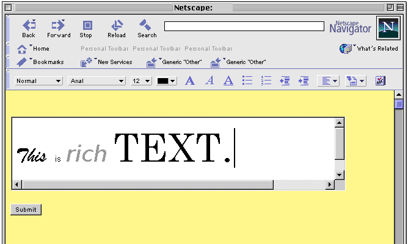
Figure D - Floating Palette

Do we want to allow users to resize the palette? If so, we should have a set number of predetermined sizes, such as: one long row, two rows, three rows, one long column.
Design Details
Ender Toolbar
The Ender Toolbar is displayed above the message compose area within the Compose Mail window and in individual web pages/sites as determined by the appropriate content provider. The Toolbar should provide access to the most commonly used features of Ender.
|
Current (4.5): 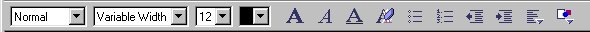 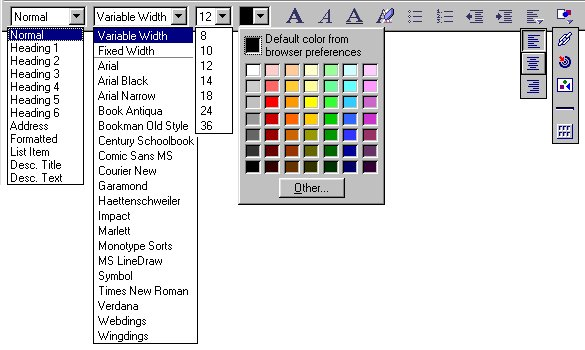 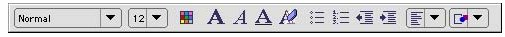 (Mac) |
|
Recommended (Seamonkey): 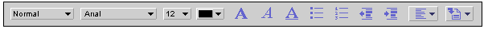 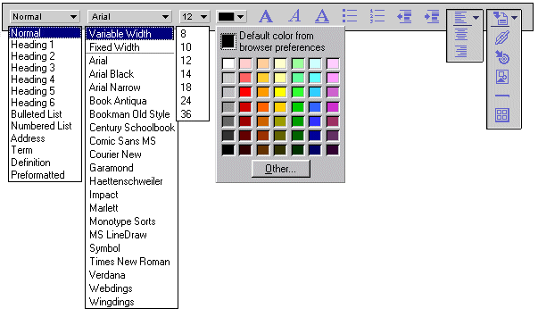 |
|
Changes:
|
Formatting Palettes/Dialogs
Currently, Ender uses modal dialogs to display it's editing features. Users must "OK" and close the dialog or click "Apply" before changes take effect and dialogs can not be left open while the user works. Also, many features are duplicated in the tabs of multiple dialogs, such as the Character Properties and Image Properties.
It is proposed that we switch to Formatting Palettes for Seamonkey. Users could leave the palettes open as they work. Items like "Link" and "Paragraph" would not be duplicated on multiple dialogs.
Character
|
Current (4.5): 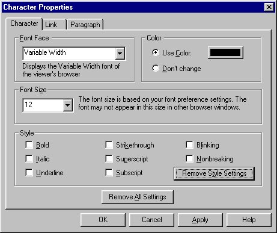 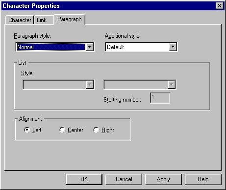 |
|
Proposed (Seamonkey): 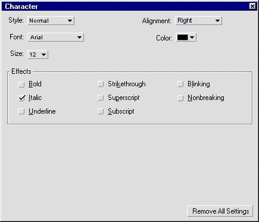 |
|
Changes:
|
Link
|
Current (4.5): 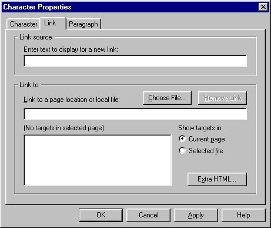 |
|
Proposed (Seamonkey): 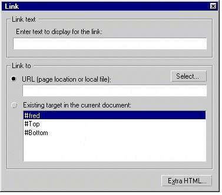 |
|
Changes:
|
Image
|
Current (4.5): 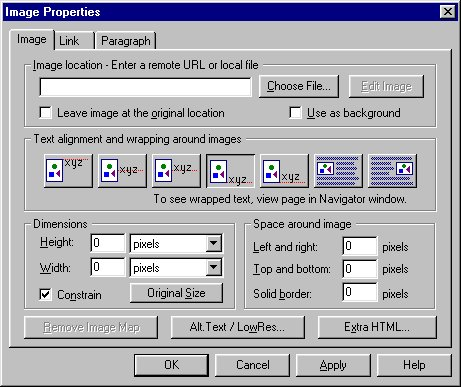 |
|
Proposed (Seamonkey): 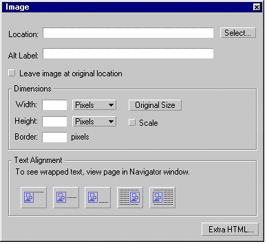 |
|
Changes:
|
Horizontal Line
|
Current (4.5): 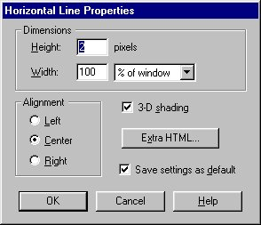 |
|
Proposed (Seamonkey): 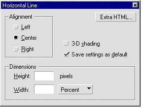
|
|
Changes: |

Table
|
Current (4.5): 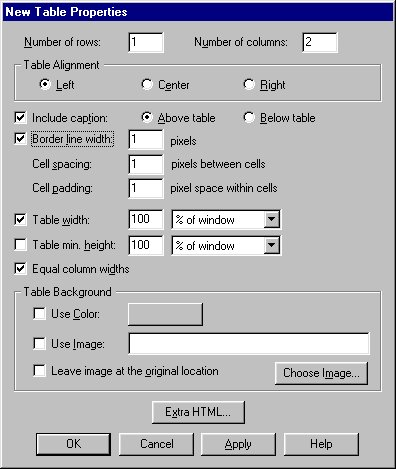 |
|
Proposed (Seamonkey): 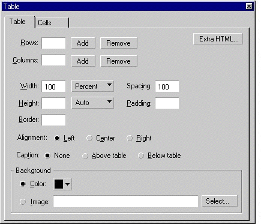 |
|
Changes: |
*Page Properties*
|
Current (4.5): 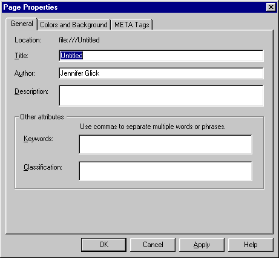 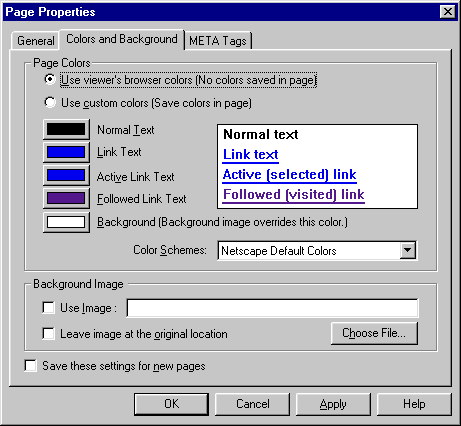 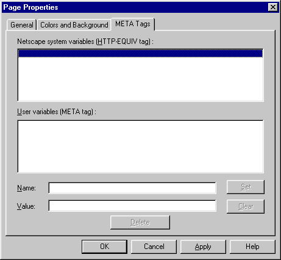 |
|
*Proposed (Seamonkey):* 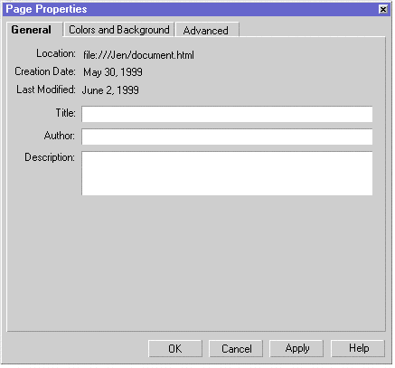
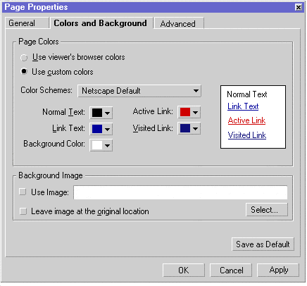 OR 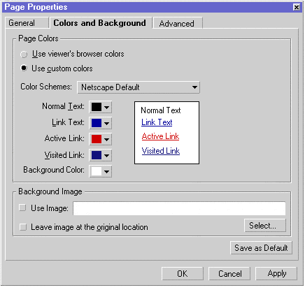 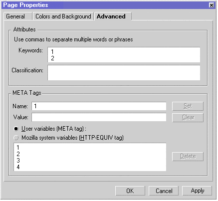 |
|
Changes:
|
Check Spelling
|
Current (4.5): 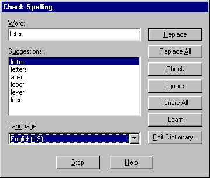 |
|
Proposed (Seamonkey): |
|
Changes: |
Target Properties Dialog
|
Current (4.5): 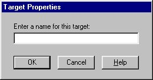 |
|
Proposed (Seamonkey): 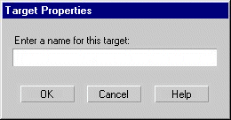 |
|
Changes:
|
Contextual Menus
Closed Issues
Archived Documents
Change History